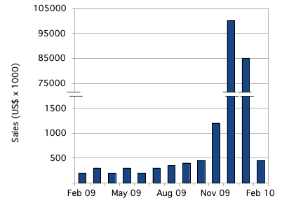

As the total volume of information in the world grows exponentially each year, designers are increasingly playing a role in visualizing and presenting data sets. I see the use of data now at a crossroads where it is being presented either passively, like the types of presentations shown in scientific academic papers (focused heavily on numeric outputs and statistical modeling), and active methods, like information graphics, that emphasize visual interpretations of the data.
What I wish to get across here is that there are advantages and limitations to both active and passive methods of interpreting data, and the best outcome is always the inclusion of both forms.
Let’s start with passive methods. In a seminal article by Jacob Cohen, called The Earth is Round, he criticized the then current nature of statistical probability and the methods in which it is presented to other researchers and society at large. He put into question null hypothesis testing, claiming that a serious issue lies in the fact that there is too much of a reliance on the p-value of a statistical test. The issue is this:
If you manage to play with the numbers and presentation of them within your output, you can essentially make almost any null hypothesis test significant, and this is the fundamental basis by which many scientific studies obtain publication in periodicals.
Cohen questioned this procedure as being too limiting in demonstrating the effectiveness of the resulting variables and championed for dynamic visualizations that would allow interactive exploration and engagement with data, rather than approaching statistics in a purely passive manner. And since that paper, we have of course witnessed a proliferation of data visualizations that bring new life to information.
There have been many problems identified, however with this new reliance on the visualization end of data delivery, including, firstly, the lie factor, which is the ratio between the size and effect shown in the graphic and the size of the effect in the data.
↑ Fig. 5: Longson (2012).↑ Fig. 6: CDC (2012) and Vox Media.I’ve been also witness to a multitude of artifacts that use armchair statistics like percentages of percentages. Who can forget this abomination that was posted by a US presidential candidate:
↑ Fig. 7: Hillary Clinton's Twitter account (retrieved 05/19/2016).Also, an explosion of chart junk, or dressing up the visualizations to the point where the data is embellished:
↑ Fig. 8: NRA (2013).Some improper labelling:
↑ Fig. 9: Bank of America (retrieved 05/19/2016).And also a heavy reliance on user interaction, which requires the user to navigate among many possible states (or forms) and rely on memory to connect them:
But what’s even more troubling is having a perceivably correct data visualization, that has some serious validity and reliability issues because of its low sample size and insufficient effect size and power. So, how then do we keep honest with the way in which we present data? Ideally, the time has come where anyone putting data out in the world should be presenting in it’s most transparent form. That includes all of its passive limitations outlined and accompanied with its visual counterparts.
As Christie Aschwaden points out, "a single way of looking at data will always be insufficient as a mode of presentation." Burt Wallach reinforces this, stating that as agents of data design, "we should seek other measures of reproducibility to ensure we are communicating what we are intending to communicate."
It's important to not take data as it is and to be critical of the research you are studying. In Chapter 201 (to be published in early 2017), we will go over, in detail, the anatomy of a scientific paper in hopes that a breakdown of typical methodologies will provide an understanding of the limitations of obtaining and analysizing data, and its effect on any conclusions one can draw from such studies.
DeWalt, K. M. & DeWalt, B. R. (2002). Participant observation. Walnut Creek, CA: AltaMira Press.
Fischer, C.T. (Ed.) (2005). Qualitative research methods for psychologists: Introduction through empirical studies. Academic Press. ISBN 0-12-088470-4.
Franklin, M. I. (2012), "Understanding Research: Coping with the Quantitative-Qualitative Divide". London/New York. Routledge
Minichiello, V. (1990). In-Depth Interviewing: Researching People. Longman Cheshire.